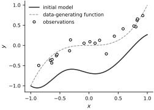
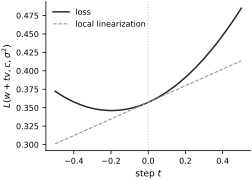

Automatic Differentiation with JAX#
JAX turns an ordinary numerical function into derivative computations. The preceding treatment of forward and reverse mode explains what these transformations compute; here we connect that mathematics to jax.grad and jax.value_and_grad.
We reuse the radial-basis-function model from the vectorization section. For an input \(x\in\mathbb{R}^d\), centers \(c_j\in\mathbb{R}^d\), and bandwidth \(\sigma>0\), define
The code variable sigma2 denotes \(\sigma^2\). The first vmap below evaluates all \(M\) basis functions at one input.
import jax.numpy as jnp
import jax.random as random
from jax import jit, value_and_grad, vmap
from functools import partial
@partial(vmap, in_axes=(None, 0, None), out_axes=0)
def rbf_features(x, centers, sigma2):
squared_distance = jnp.sum((x - centers) ** 2, axis=-1)
return jnp.exp(-squared_distance / (2.0 * sigma2))
A second vmap evaluates the scalar model at every row of an input array. JIT compilation then compiles the batched calculation.
@jit
@partial(vmap, in_axes=(0, None, None, None), out_axes=0)
def model(x, weights, centers, sigma2):
return rbf_features(x, centers, sigma2) @ weights
We use ten centers on \([-1,1]\) and one random set of weights. Each random quantity receives its own subkey.
num_basis = 10
sigma2 = 0.1
centers = jnp.linspace(-1.0, 1.0, num_basis).reshape(-1, 1)
key = random.key(0)
key, weights_key, inputs_key, noise_key, direction_key = random.split(key, 5)
weights = 0.25 * random.normal(weights_key, (num_basis,))
x_plot = jnp.linspace(-1.0, 1.0, 200).reshape(-1, 1)
initial_prediction = model(x_plot, weights, centers, sigma2)
Scalar loss and gradients#
We generate \(N=20\) synthetic observations from
The dashed curve in the figure is the data-generating function; the solid curve is the initial radial basis function (RBF) model.
x_train = random.uniform(inputs_key, (20, 1), minval=-1.0, maxval=1.0)
y_train = x_train[:, 0] ** 3 + 0.1 * random.normal(noise_key, (20,))
fig, ax = new_figure(size="half_standard")
ax.plot(
x_plot[:, 0],
initial_prediction,
color="0.15",
linestyle="-",
label="initial model",
)
ax.plot(
x_plot[:, 0],
x_plot[:, 0] ** 3,
color="0.55",
linestyle="--",
linewidth=1.0,
label="data-generating function",
)
ax.plot(
x_train[:, 0],
y_train,
linestyle="none",
marker="o",
markerfacecolor="white",
markeredgecolor="black",
label="observations",
)
ax.set(xlabel="$x$", ylabel="$y$")
ax.legend(loc="best")
_ = finalize_axes(keep_box=False)
{kind=link}

Fig. 1 Synthetic regression example before differentiation. The dashed curve is the data-generating function \(x^3\), open circles are 20 noisy observations, and the solid curve is the initial radial-basis model.#
The mean-squared-error loss is the scalar function
A scalar output matters because jax.grad represents the reverse-mode derivative as a gradient with the same shape as the differentiated argument.
def loss(weights, centers, sigma2, x, y):
prediction = model(x, weights, centers, sigma2)
return jnp.mean((y - prediction) ** 2)
value_and_grad evaluates \(L\) and \(\nabla_wL\) together. For a scalar loss, this is the reverse-mode calculation from the preceding section with output cotangent \(1\). The keyword argnums=0 selects the first argument, the weight vector.
loss_and_weight_grad = jit(value_and_grad(loss, argnums=0))
loss_value, weight_gradient = loss_and_weight_grad(
weights, centers, sigma2, x_train, y_train
)
print(f"loss = {float(loss_value):.6f}")
print(f"weight-gradient shape = {weight_gradient.shape}")
loss = 0.357285
weight-gradient shape = (10,)
A tuple of argument indices asks for several derivatives in one reverse-mode transformation. With argnums=(0, 1, 2), JAX returns \(\nabla_wL\), \(\nabla_cL\), and \(\partial L/\partial\sigma^2\) in that order.
loss_and_full_grad = jit(value_and_grad(loss, argnums=(0, 1, 2)))
The returned derivatives match the shapes of the corresponding inputs: the weights form a vector, the centers form a matrix, and \(\sigma^2\) is a scalar.
loss_value, (weight_gradient, center_gradient, sigma2_gradient) = (
loss_and_full_grad(weights, centers, sigma2, x_train, y_train)
)
print("weights:", weight_gradient.shape)
print("centers:", center_gradient.shape)
print("sigma2:", sigma2_gradient.shape)
weights: (10,)
centers: (10, 1)
sigma2: ()
Directional derivative check#
A centered finite difference provides an independent diagnostic for the automatic derivative. For a unit direction \(v\) in weight space,
The finite difference has truncation and roundoff error; it is used only to check the automatic derivative.
direction = random.normal(direction_key, weights.shape)
direction = direction / jnp.linalg.norm(direction)
directional_ad = jnp.vdot(weight_gradient, direction)
epsilon = 1e-3
loss_plus = loss(
weights + epsilon * direction, centers, sigma2, x_train, y_train
)
loss_minus = loss(
weights - epsilon * direction, centers, sigma2, x_train, y_train
)
directional_fd = (loss_plus - loss_minus) / (2.0 * epsilon)
relative_error = jnp.abs(directional_ad - directional_fd) / jnp.maximum(
jnp.abs(directional_fd), 1e-12
)
steps = jnp.linspace(-0.5, 0.5, 101)
loss_slice = vmap(
lambda step: loss(
weights + step * direction, centers, sigma2, x_train, y_train
)
)(steps)
linearization = loss_value + steps * directional_ad
print(f"AD directional derivative = {float(directional_ad):.6f}")
print(f"finite-difference check = {float(directional_fd):.6f}")
print(f"relative difference = {float(relative_error):.2e}")
AD directional derivative = 0.112631
finite-difference check = 0.112623
relative difference = 7.07e-05
fig, ax = new_figure(size="half_standard")
ax.plot(steps, loss_slice, color="0.15", linestyle="-", label="loss")
ax.plot(
steps,
linearization,
color="0.55",
linestyle="--",
linewidth=1.0,
label="local linearization",
)
ax.axvline(0.0, color="0.75", linestyle=":", linewidth=1.0)
ax.set(xlabel="step $t$", ylabel=r"$L(w+t v,c,\sigma^2)$")
ax.legend(loc="best")
_ = finalize_axes(keep_box=False)
{kind=link}

Fig. 2 Directional derivative check. The solid curve is the loss along the weight-space direction \(v\); the dashed line is the local linearization defined by the JAX gradient. They agree at \(t=0\), marked by the dotted vertical line.#
Further reading#
The JAX documentation develops grad and value_and_grad, the underlying jvp and vjp transformations, and additional constructions in the Autodiff Cookbook.